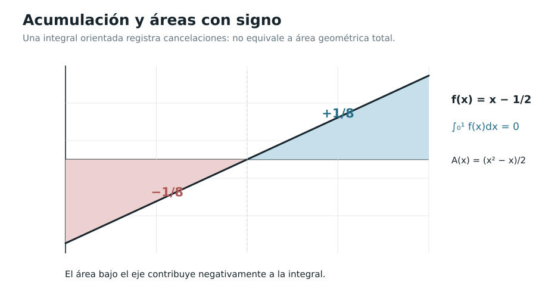

Capítulo 6. El Teorema Fundamental del Cálculo
Índice del libro · Prefacio · Itinerarios
Exposición · Ejercicios · Soluciones · Notas históricas
Pregunta generadora. ¿Por qué la acumulación de una magnitud variable puede recuperarse mediante una derivada, y por qué conocer una primitiva permite calcular una integral sin volver a sumar rectángulos?
Al mover el extremo de una región bajo una gráfica, cambiamos el número que representa su acumulación. Podemos preguntar cuánto cambia ese número y dividir el incremento por la distancia recorrida por el extremo. El cociente tiene las mismas unidades que la altura de la gráfica; en una franja estrecha, parece razonable que se aproxime a la altura en el punto de partida. Si conseguimos demostrarlo, la función que habíamos integrado reaparecerá como derivada de su acumulación.
Contamos ya con las dos construcciones necesarias para estudiar esa relación. La derivada surgió de las pendientes de secantes y las velocidades medias; la integral, de cotas y sumas que permiten reunir todas las aproximaciones suficientemente finas. El problema pendiente de C05 consiste en comparar sus límites. La aditividad de la integral aislará la franja recién añadida y el orden permitirá acotar su contribución, de modo que podremos trabajar incluso cuando no conozcamos una fórmula para el valor acumulado.
Después estudiaremos qué ocurre si otra función tiene esa misma derivada. El teorema del valor medio permitirá compararla con la acumulación y determinar cuánto pueden diferir. De esa comparación obtendremos una manera de calcular integrales mediante primitivas, apoyada en el número que las sumas de C05 ya habían definido.
6.1. El problema de sumar mientras el extremo se mueve
Sea \(a<b\) y sea \(f:[a,b]\to\mathbb R\) continua. Para cada \(x\in[a,b]\) ya tenemos, gracias al Teorema 5.4 (EDC-C05-THM-004) y a la aditividad (EDC-C05-THM-008), un número bien definido:
\[ F(x)=\int_a^x f(t)\,dt. \]
La letra \(t\) es una variable muda de integración: sustituirla por \(u\) no modifica el número. En cambio, \(x\) es el extremo variable; cambiarlo sí modifica la acumulación. Si \(f\ge0\), \(F(x)\) puede interpretarse como área bajo la gráfica desde \(a\) hasta \(x\). Si \(f\) toma valores negativos, \(F\) representa una acumulación con signo, no la suma de áreas geométricas sin orientación.
Para \(f(t)=t^2\) en \([0,1]\) conocemos las sumas y su valor límite. Si el extremo se sitúa en \(x>0\), una partición de \([0,1]\) se convierte, al multiplicar sus puntos y etiquetas por \(x\), en una partición de \([0,x]\). Las alturas cuadráticas se multiplican por \(x^2\) y las anchuras por \(x\), por lo que toda suma se multiplica por \(x^3\). Su límite es \(x^3/3\); en \(x=0\) la integral es cero por definición. Así tenemos \(F(x)=x^3/3\), cuya derivada es \(x^2\).
En este ejemplo pudimos reconocer la función de acumulación antes de derivarla. Para un integrando continuo cualquiera, la misma relación tendrá que surgir del incremento de la integral, sin depender de una expresión algebraica que quizá no sepamos encontrar.
6.2. Las herramientas: aditividad, orden y orientación
Lema 6.1 (cotas del incremento; EDC-C06-LEM-001). Sea \(f:[a,b]\to\mathbb R\) integrable, \(a\le u<v\le b\), y sean
\[ m_{u,v}=\inf_{t\in[u,v]}f(t),\qquad M_{u,v}=\sup_{t\in[u,v]}f(t). \]
Entonces
\[ m_{u,v}(v-u)\le\int_u^v f(t)\,dt\le M_{u,v}(v-u). \]
Si \(f\) es continua, el ínfimo y el supremo son mínimo y máximo alcanzados. Para \(h\ne0\) y \(x,x+h\in[a,b]\), el cociente
\[ \frac{1}{h}\int_x^{x+h}f(t)\,dt \]
queda entre el ínfimo y el supremo de \(f\) en el intervalo cerrado comprendido entre \(x\) y \(x+h\), tanto si \(h>0\) como si \(h<0\).
Demostración. La integrabilidad en \([a,b]\) se conserva al restringir a \([u,v]\), por el Teorema 5.8. En ese intervalo, las constantes \(m_{u,v}\) y \(M_{u,v}\) acotan a \(f\). El orden de la integral y el valor de una constante, demostrados en C05, dan las dos cotas del enunciado. Si \(f\) es continua, el teorema de valores extremos asegura además que esas cotas locales son valores de la función.
Para \(h>0\), el intervalo es \([x,x+h]\) y su longitud es \(h\); dividir por ella coloca el cociente entre las dos alturas. Si \(h<0\), el intervalo no orientado es \([x+h,x]\), cuya longitud es \(-h>0\). La orientación permite escribir \(h^{-1}\int_x^{x+h}f=(-h)^{-1}\int_{x+h}^x f\). Por tanto estamos dividiendo de nuevo una integral sobre un intervalo ordenado por su longitud positiva, y obtenemos las mismas cotas. El cociente representa en ambos casos una altura promedio sobre el tramo. \(\square\)
Las cotas permiten comparar el incremento de una acumulación con las alturas del tramo que lo produce. Si esas alturas están próximas a un mismo valor, su promedio queda próximo a él, aunque la función varíe dentro del intervalo.
Lema 6.2 (oscilación local; EDC-C06-LEM-002). Si \(f\) es continua en \(c\in[a,b]\), entonces, para todo \(\varepsilon>0\), existe \(\delta>0\) tal que cualquier intervalo \(J\subseteq[a,b]\) que contenga a \(c\) y esté contenido en \((c-\delta,c+\delta)\) satisface
\[ \sup_{t\in J}|f(t)-f(c)|<\varepsilon. \]
Demostración. La continuidad relativa en \(c\) permite exigir \(|f(t)-f(c)|<\varepsilon/2\) para todo \(t\in[a,b]\) con \(|t-c|<\delta\), escogiendo un único \(\delta>0\). Cada punto de \(J\) satisface esa condición, así que todas las diferencias quedan acotadas por \(\varepsilon/2\). Su supremo no supera esa cantidad y, por ello, es estrictamente menor que \(\varepsilon\).
Elegimos la mitad de la tolerancia porque tomar un supremo puede convertir una cota estricta puntual en una cota no estricta. El margen restante conserva la desigualdad que pide el lema. La continuidad relativa también cubre los extremos de \([a,b]\), donde sólo consideramos los puntos del dominio. \(\square\)

6.3. La función de acumulación es continua, aun antes de derivarla
Definición 6.1 (función de acumulación; EDC-C06-DEF-001). Para una función Riemann–Darboux integrable \(f:[a,b]\to\mathbb R\), denominamos función de acumulación con origen \(a\) a
\[ \mathcal A_a f:[a,b]\to\mathbb R,\qquad (\mathcal A_a f)(x)=\int_a^x f(t)\,dt. \]
En esta definición no exigimos que \(f\) sea continua: la integrabilidad es suficiente para definir cada subintegral por el Teorema 5.8. Fijamos \(F=\mathcal A_af\).
Teorema 6.1 (continuidad de la acumulación; EDC-C06-THM-001). Si \(f\) es integrable y \(|f(t)|\le M\) para todo \(t\in[a,b]\), donde \(M\ge0\), entonces
\[ |F(y)-F(x)|\le M|y-x|\qquad (x,y\in[a,b]). \]
En consecuencia, \(F\) es continua en \([a,b]\), incluso cuando \(f\) no lo sea.
Demostración. Al restar las acumulaciones hasta \(y\) y hasta \(x\), la parte común se cancela por la aditividad orientada de C05:
\[ F(y)-F(x)=\int_x^y f(t)\,dt. \]
Si \(x<y\), la comparación \(-M\le f\le M\) y el valor integral de una constante dan
\[ -M(y-x)\le F(y)-F(x)\le M(y-x). \]
La diferencia queda entre un número y su opuesto, así que su módulo no supera \(M(y-x)\). Si \(y<x\), intercambiamos los puntos; ambos módulos permanecen iguales y la longitud positiva pasa a ser \(x-y\). Si coinciden, la diferencia es cero. Esto demuestra la estimación para todos los pares.
Para verificar continuidad, fijamos \(\varepsilon>0\). Cuando \(M>0\), exigir \(|x-y|<\varepsilon/M\) hace el cambio de \(F\) menor que \(\varepsilon\). Si \(M=0\), la cota obliga a que \(f\) sea nula y \(F\) sea constantemente cero. El control funciona en todo el intervalo, incluidos sus extremos. \(\square\)
Proposición 6.1 (monotonía de la acumulación; EDC-C06-PRP-001). Si \(f\ge0\), la función \(F\) es no decreciente. Si \(f\le0\), es no creciente. Más generalmente, si \(m\le f\le M\), para \(x<y\) se cumple
\[ m(y-x)\le F(y)-F(x)\le M(y-x). \]
Demostración. Para \(x<y\), la aditividad identifica \(F(y)-F(x)\) con \(\int_x^y f\). El Lema 6.1 coloca esa integral entre \(m(y-x)\) y \(M(y-x)\), pues las cotas globales también valen en el intervalo menor. Si \(f\ge0\), podemos tomar la cota inferior cero y resulta \(F(y)\ge F(x)\). Si \(f\le0\), la cota superior cero da \(F(y)\le F(x)\). \(\square\)
La acumulación conserva continuidad incluso si el integrando salta. Una altura acotada sólo puede aportar, sobre un tramo corto, una cantidad cuyo módulo sea pequeño. Para obtener su derivada necesitaremos precisar además qué altura describe el comportamiento cerca de cada punto.
6.4. Primera parte: derivar una acumulación continua
Teorema 6.2 (Teorema Fundamental, primera parte; EDC-C06-THM-002). Sean \(a<b\) y \(f:[a,b]\to\mathbb R\) continua. Definamos
\[ F(x)=\int_a^x f(t)\,dt,\qquad a\le x\le b. \]
Entonces \(F\) es continua en \([a,b]\), derivable en \((a,b)\) y
\[ \boxed{F'(x)=f(x)\quad\text{para todo }x\in(a,b).} \]
En los extremos existen las derivadas relativas al intervalo, \(F'_+(a)=f(a)\) y \(F'_-(b)=f(b)\); no se afirma una derivada bilateral en \(a\) o en \(b\) si \(F\) sólo está definida sobre \([a,b]\).
Demostración. La continuidad de \(f\) en el intervalo cerrado asegura acotación por el teorema de valores extremos de C00. El Teorema 6.1 garantiza entonces la continuidad de \(F\). Fijemos \(x\in(a,b)\) y estudiemos su cociente incremental para \(h\ne0\) con \(x+h\in[a,b]\).
La aditividad permite cancelar la acumulación común desde \(a\) hasta \(x\), dejando sólo el aporte entre \(x\) y \(x+h\):
\[ \frac{F(x+h)-F(x)}h =\frac1h\int_x^{x+h}f(t)\,dt. \]
El Lema 6.1 sitúa este cociente entre el mínimo y el máximo de \(f\) en el intervalo cerrado \(J_h\) que une los dos extremos. Esas alturas pueden cambiar con \(h\), pero todos los puntos del tramo distan de \(x\) a lo sumo \(|h|\). Para compararlas con la altura fija \(f(x)\), acotamos las separaciones de cada valor y obtenemos
\[ \left|\frac{F(x+h)-F(x)}h-f(x)\right| \le\sup_{t\in J_h}|f(t)-f(x)|. \]
Dado \(\varepsilon>0\), el Lema 6.2 proporciona un entorno donde ese supremo es menor que \(\varepsilon\). Escogemos \(|h|\) menor que su radio y que las distancias de \(x\) a los extremos del dominio. Entonces \(J_h\) está entero en el entorno y el cociente difiere de \(f(x)\) en menos que la tolerancia, tanto para incrementos positivos como negativos. Por la definición de derivada (EDC-C01-DEF-002), \(F'(x)=f(x)\).
En \(a\) sólo admitimos \(h>0\); en \(b\), \(h<0\). La continuidad relativa de \(f\) y la misma estimación dan \(F'_+(a)=f(a)\) y \(F'_-(b)=f(b)\). Son límites dentro del dominio. \(\square\)
El cociente incremental convierte la contribución de una franja en su altura promedio. La continuidad hace que, al estrecharla alrededor del punto, todas sus alturas se acerquen a \(f(x)\). Esa es la información que permite recuperar el integrando al derivar, y explica por qué la demostración funciona sin conocer una fórmula para \(F\).
6.4.1. Dos controles inmediatos
Para \(f(t)=1\) en \([a,b]\), \(F(x)=x-a\) y su derivada vale uno. Para \(f(t)=t^2\) en \([0,1]\), las sumas de C04–C05 y su cambio de escala dan \(F(x)=x^3/3\), de acuerdo con \(F'(x)=x^2\). En ambos casos conocíamos ya una fórmula que permite comprobar el resultado.
Consideremos en cambio el integrando continuo \(e^{-t^2}\) en \([0,1]\). Podemos definir
\[ H(x)=\int_0^x e^{-t^2}\,dt \]
y el teorema demuestra que \(H'(x)=e^{-x^2}\) en el interior. La integral proporciona una función concreta, con \(H(0)=0\) y esa derivada, aunque no hayamos hallado una expresión cerrada para ella. Su existencia descansa en las sumas y su derivabilidad en la estimación local que acabamos de probar; decidir si admite una expresión mediante funciones elementales sería otro problema.
6.5. Qué sucede si la función no es continua
Teorema 6.3 (primera parte, versión puntual; EDC-C06-THM-003). Sea \(f:[a,b]\to\mathbb R\) integrable, y sea \(c\in(a,b)\) un punto donde \(f\) es continua. Entonces \(F=\mathcal A_af\) es derivable en \(c\) y \(F'(c)=f(c)\).
Demostración. La integrabilidad define \(F\) y sus incrementos por aditividad. El Lema 6.1, que no exige continuidad, coloca cada cociente entre las cotas locales de \(f\) en el tramo \(J_h\) que une \(c\) y \(c+h\). Al compararlo con \(f(c)\) obtenemos la misma cota por \(\sup_{t\in J_h}|f(t)-f(c)|\) de la prueba anterior. La continuidad en \(c\) hace esa cota menor que cualquier tolerancia cuando \(|h|\) es pequeño. Por tanto el cociente converge a \(f(c)\) y \(F'(c)=f(c)\). \(\square\)
Para derivar en \(c\) sólo necesitamos controlar las alturas cerca de \(c\). La función puede ser discontinua en otros puntos y seguir satisfaciendo allí la conclusión puntual. En un punto donde falle la continuidad, el comportamiento de la acumulación tendrá que examinarse directamente.
Contraejemplo A (una discontinuidad removible). En \([-1,1]\) fijemos
\[ r(t)=\begin{cases}0,&t=0,\\1,&t\ne0.\end{cases} \]
Por el Lema 5.3 y linealidad, \(r\) es integrable; además, \(\int_{-1}^x r(t)\,dt=x+1\) para todos los \(x\in[-1,1]\). La acumulación tiene derivada \(1\) en \(0\), pero \(r(0)=0\). Ser integrable no obliga a que la derivada de la acumulación coincida con el valor del integrando en un punto de discontinuidad.
Contraejemplo B (un salto). Sea \(s(t)=0\) si \(t<0\) y \(s(t)=1\) si \(t\ge0\), sobre \([-1,1]\). La función es monótona e integrable por C05. Su acumulación es
\[ S(x)=\int_{-1}^x s(t)\,dt= \begin{cases}0,&-1\le x\le0,\\x,&0\le x\le1.\end{cases} \]
En \(x=0\), las derivadas laterales de \(S\) son \(0\) y \(1\). No existe derivada bilateral allí. La continuidad de \(S\) no está en duda: fue demostrada para todas las acumulaciones de funciones acotadas integrables.
En el primer ejemplo, cambiar una altura aislada conserva todas las integrales y deja intacta una acumulación derivable; en el segundo, las alturas de ambos lados del salto producen dos pendientes diferentes. La integrabilidad asegura continuidad de las dos acumulaciones. Su derivabilidad y la coincidencia de la derivada con el valor puntual del integrando son preguntas adicionales que los ejemplos resuelven de maneras distintas.
6.6. Primitivas y constantes de integración
Definición 6.2 (primitiva; EDC-C06-DEF-002). Una función \(G:[a,b]\to\mathbb R\) es una primitiva de \(f:[a,b]\to\mathbb R\) en el intervalo si \(G\) es continua en \([a,b]\), derivable en \((a,b)\) y satisface \(G'(x)=f(x)\) para todo \(x\in(a,b)\). La definición sólo exige derivadas interiores; los valores de \(f\) en los extremos no intervienen en esa ecuación.
Teorema 6.4 (unicidad salvo una constante; EDC-C06-THM-004). Si \(G\) y \(H\) son primitivas de la misma función \(f\) en \([a,b]\), entonces existe \(C\in\mathbb R\) tal que
\[ G(x)=H(x)+C\qquad (a\le x\le b). \]
Demostración. Para comparar dos primitivas miramos su diferencia \(K=G-H\). Es continua en \([a,b]\), derivable en \((a,b)\) y su derivada es cero, porque las dos derivadas coinciden con \(f\) en cada punto interior.
Tomemos cualesquiera \(u<v\) de \([a,b]\). La restricción de \(K\) a \([u,v]\) conserva continuidad en los extremos y derivabilidad en el interior, incluso si \(u=a\) o \(v=b\). El teorema del valor medio de C03 proporciona un \(c\in(u,v)\) tal que
\[ K(v)-K(u)=K'(c)(v-u)=0. \]
Así cualquier par de valores de \(K\) coincide. Podemos fijar \(C=K(a)\) y obtenemos \(K(x)=C\) para todo \(x\in[a,b]\), que equivale a la igualdad del enunciado. La continuidad de las primitivas en los bordes permite incluirlos en la comparación. \(\square\)
Corolario 6.1 (existencia para integrandos continuos; EDC-C06-COR-001). Toda función continua \(f:[a,b]\to\mathbb R\) posee una primitiva en el sentido anterior, a saber, \(F(x)=\int_a^x f(t)\,dt\). Todas las demás tienen la forma \(F+C\).
Demostración. El Teorema 6.2 construye \(F\) a partir de la integral y prueba tanto su continuidad en \([a,b]\) como la igualdad \(F'=f\) en el interior. Satisface por ello la definición de primitiva. El Teorema 6.4 obliga a que cualquier otra primitiva difiera de \(F\) en una constante; recíprocamente, añadir una constante conserva continuidad y derivada. \(\square\)
La constante recoge la libertad de elegir un valor inicial: la acumulación con origen \(a\) vale cero allí, mientras otra primitiva puede tomar cualquier valor. Una vez fijada esa diferencia, el valor medio obliga a conservarla a lo largo de todo el intervalo. Sobre dos intervalos separados, esa comparación sólo funciona dentro de cada uno y permite constantes distintas.
6.7. Segunda parte: calcular una integral por una primitiva
Teorema 6.5 (Teorema Fundamental, segunda parte; EDC-C06-THM-005). Sean \(a<b\) y \(f:[a,b]\to\mathbb R\) continua. Si \(G\) es una primitiva de \(f\) en \([a,b]\), entonces
\[ \boxed{\int_a^b f(t)\,dt=G(b)-G(a).} \]
Demostración. La primera parte proporciona la primitiva \(F(x)=\int_a^x f(t)\,dt\), construida mediante las integrales de C05. La primitiva \(G\) puede tener otra expresión y otro valor inicial, pero el Teorema 6.4 asegura \(G(x)=F(x)+C\) en todo \([a,b]\).
Al restar los valores en los extremos, la constante desaparece:
\[ G(b)-G(a)=F(b)-F(a). \]
La acumulación de origen \(a\) satisface \(F(a)=\int_a^a f=0\) y \(F(b)=\int_a^b f\). Reemplazamos ambos valores y obtenemos la fórmula. \(\square\)
Para evaluar una integral podemos buscar una primitiva que resulte fácil de calcular en los extremos. La comparación con \(F\) demuestra que cualquier elección válida dará el mismo resultado: todas conservan la diferencia entre los valores terminales. La existencia de la integral se estableció en C05, y la primera parte permitió después reconocer su acumulación como primitiva.
6.7.1. Una demostración directa por sumas
También podemos comparar directamente la diferencia \(G(b)-G(a)\) con las sumas que definen la integral. Sea \(G\) continua en \([a,b]\), derivable en \((a,b)\), con \(G'=f\) allí y \(f\) continua en el intervalo cerrado. Elegimos una partición \(P:a=x_0<\cdots<x_n=b\) y repartimos la variación total de \(G\) entre sus piezas.
En cada \([x_{i-1},x_i]\), el teorema del valor medio convierte el incremento de \(G\) en una derivada interior multiplicada por la anchura. Sus hipótesis se cumplen también en las piezas que tocan \(a\) o \(b\), donde basta continuidad. Así encontramos \(\xi_i\in(x_{i-1},x_i)\) con
\[ G(x_i)-G(x_{i-1})=G'(\xi_i)(x_i-x_{i-1})=f(\xi_i)\Delta_i. \]
Sumamos las igualdades. Cada valor de \(G\) en un corte interior aparece una vez con signo positivo y otra con negativo, por lo que sólo quedan los extremos:
\[ G(b)-G(a)=\sum_{i=1}^n f(\xi_i)\Delta_i. \]
El miembro derecho es una suma de Riemann con etiquetas escogidas por el valor medio. Cada partición puede producir etiquetas diferentes, pero \(f\) es integrable por continuidad y el Teorema 5.3 controla todas las elecciones. Para una tolerancia \(\varepsilon>0\), tomamos una partición de finura menor que el umbral de ese teorema. Su suma difiere de la integral en menos que \(\varepsilon\) y vale exactamente \(G(b)-G(a)\). Como esto puede hacerse para cualquier tolerancia, la diferencia terminal y la integral deben coincidir.
Esta prueba no utiliza la primera parte: el valor medio fabrica una suma exacta para cada partición, y la convergencia de las sumas la identifica con la integral. La continuidad de \(f\) sólo ha intervenido para garantizar integrabilidad, observación que permite ampliar el resultado.
6.8. Una ampliación controlada: derivadas integrables
Teorema 6.6 (versión para una derivada integrable; EDC-C06-THM-006). Si \(G:[a,b]\to\mathbb R\) es continua en \([a,b]\), derivable en \((a,b)\) y existe una función \(f:[a,b]\to\mathbb R\) integrable con \(f(x)=G'(x)\) para todos los \(x\in(a,b)\), entonces
\[ \int_a^b f(t)\,dt=G(b)-G(a). \]
No se exige continuidad de \(f\); sus valores en \(a\) y \(b\) pueden elegirse arbitrariamente, siempre que la función resultante sea integrable.
Demostración. En cada pieza de cualquier partición, \(G\) satisface las hipótesis del valor medio. Obtenemos etiquetas estrictamente interiores con \(G(x_i)-G(x_{i-1})=G'(\xi_i)\Delta_i=f(\xi_i)\Delta_i\). La igualdad con \(f\) sólo se usa en esos puntos interiores, así que sus valores terminales no intervienen.
Al sumar, los incrementos telescopan y la suma etiquetada vale exactamente \(G(b)-G(a)\). Como \(f\) es integrable por hipótesis, el Teorema 5.3 asegura que, para toda tolerancia, cualquier suma suficientemente fina está próxima a su integral. Elegimos una de esas particiones y las etiquetas producidas por el valor medio. La diferencia entre \(G(b)-G(a)\) y la integral es menor que toda tolerancia, luego es cero. \(\square\)
La prueba necesita que \(f\) sea integrable para identificar el límite de sus sumas. La existencia de \(G'\) en el interior no garantiza por sí sola esa propiedad: una derivada puede ser discontinua, como vimos en C02, e incluso quedar sin cota cerca de un extremo. En los ejercicios examinaremos \(G(x)=\sqrt{x}\) sobre \([0,1]\), donde existe la diferencia \(G(1)-G(0)\) pero la derivada no permite formar una integral propia de Darboux en ese intervalo.
6.9. Ejemplos: áreas, desplazamientos y acumulación
Las reglas de derivación de C02 permiten reconocer primitivas y, gracias al teorema, evaluar integrales ya construidas.
Potencias. Para un entero \(n\ge0\) y \(a<b\) reales, \(G(x)=x^{n+1}/(n+1)\) es primitiva de \(x^n\). Luego
\[ \int_a^b x^n\,dx=\frac{b^{n+1}-a^{n+1}}{n+1}. \]
La fórmula no tiene excepción en \(x=0\) cuando \(n\) es entero no negativo. Para potencias reales \(x^r\) con \(x>0\) y \(r\ne-1\) se obtiene la expresión análoga, siempre manteniendo el intervalo dentro de \((0,\infty)\). Para \(r=-1\) interviene el logaritmo.
Exponencial y logaritmo. Dado que \((e^x)'=e^x\),
\[ \int_a^b e^x\,dx=e^b-e^a. \]
Y, para \(0<a<b\), como \((\ln x)'=1/x\),
\[ \int_a^b\frac{dx}{x}=\ln b-\ln a. \]
Trigonometría. En cualquier intervalo real,
\[ \int_a^b\cos x\,dx=\sin b-\sin a,\qquad \int_a^b\sin x\,dx=-\cos b+\cos a. \]
En particular, \(\int_0^{\pi}\sin x\,dx=2\). La interpretación geométrica coincide con el área sólo porque \(\sin x\ge0\) en ese intervalo; en un intervalo con cambio de signo el valor integral puede registrar cancelaciones.
Desplazamiento frente a distancia. Si \(s(t)\) es una posición diferenciable y \(v(t)=s'(t)\) es continua, entonces
\[ \int_{t_0}^{t_1}v(t)\,dt=s(t_1)-s(t_0). \]
Esta integral expresa el desplazamiento neto, no necesariamente la distancia recorrida. Cuando \(v\) es continua, la distancia recorrida sin saltos de posición y con el movimiento representado por esta velocidad se calcula mediante \(\int_{t_0}^{t_1}|v(t)|\,dt\); justificarlo en un modelo físico exige entender la distancia como suma de variaciones absolutas, no confundirla con el valor absoluto del desplazamiento.
6.10. Extremos variables e información de la regla de la cadena
La primera parte también permite diferenciar ciertas expresiones integrales compuestas, sin haber formulado todavía la técnica general de sustitución que estudiaremos en C07.
Proposición 6.2 (extremos variables; EDC-C06-PRP-002). Sea \(f\) continua sobre un intervalo cerrado \([a,b]\). Sean \(\alpha,\beta:J\to[a,b]\) derivables en un intervalo abierto \(J\subseteq\mathbb R\). Entonces
\[ H(x)=\int_{\alpha(x)}^{\beta(x)}f(t)\,dt \]
es derivable en \(J\) y
\[ \boxed{H'(x)=f(\beta(x))\beta'(x)-f(\alpha(x))\alpha'(x).} \]
Demostración. Definimos \(F(u)=\int_a^u f(t)\,dt\). La primera parte da \(F'=f\) en \((a,b)\) y las derivadas relativas en los extremos. La aditividad orientada permite reunir las dos integrales con un origen fijo:
\[ H(x)=F(\beta(x))-F(\alpha(x)). \]
Si en un punto \(x_0\in J\) el valor de \(\beta\) pertenece a \((a,b)\), la continuidad de \(\beta\) mantiene sus valores cercanos dentro de ese intervalo. La regla de la cadena de C02 da entonces \((F\circ\beta)'(x_0)=f(\beta(x_0))\beta'(x_0)\).
Supongamos que \(\beta(x_0)=a\). Como todos los valores de \(\beta\) están en \([a,b]\), \(x_0\) es un mínimo local de \(\beta\) y Fermat da \(\beta'(x_0)=0\). Falta comprobar que la composición sea derivable, pues sólo conocemos una derivada lateral de \(F\) en \(a\). Podemos usar directamente la estimación del Teorema 6.1: si \(|f|\le M\), para \(h\ne0\) pequeño,
\(|F(\beta(x_0+h))-F(\beta(x_0))|/|h|\le M|\beta(x_0+h)-\beta(x_0)|/|h|\).
El último cociente tiende a \(|\beta'(x_0)|=0\). Por encaje, el cociente incremental de la composición tiende a cero, que es \(f(a)\beta'(x_0)\). Si \(\beta(x_0)=b\), Fermat se aplica al máximo y la misma estimación da el resultado. Todos los casos de \(\alpha\) se prueban del mismo modo. Restamos las derivadas de ambas composiciones y obtenemos la fórmula, incluso cuando alguno de sus valores está en el borde. \(\square\)
Ejemplo. Para \(-1<x<1\),
\[ \frac{d}{dx}\int_0^{x^2}e^{t^2}\,dt=2x e^{x^4}. \]
No hemos encontrado una primitiva elemental de \(e^{t^2}\); la fórmula se debe a la composición de la acumulación con el extremo \(x^2\).
6.11. Condiciones y fronteras: qué permite y qué no permite el teorema
Para usar la primera parte comenzamos comprobando que las integrales que forman la acumulación existen. La función de Dirichlet de C05 queda fuera: sus sumas inferiores y superiores mantienen una separación positiva, de modo que no disponemos de \(F(x)=\int_0^x f\) como una acumulación de Darboux sobre todo \([0,1]\). Si la integrabilidad está asegurada, el Teorema 6.1 da continuidad de \(F\); la continuidad del integrando en un punto permite además identificar allí su derivada. Los ejemplos de §6.5 muestran las dos dificultades que pueden aparecer en una discontinuidad.
Para evaluar mediante una primitiva, comprobamos su continuidad hasta los extremos y la igualdad de derivadas en el interior. El Teorema 6.5 garantiza la fórmula para un integrando continuo, y el Teorema 6.6 permite usarla cuando acreditamos integrabilidad de la derivada sin exigir continuidad. El valor de una primitiva en el borde no puede modificarse arbitrariamente: esa modificación podría cambiar la diferencia terminal aunque dejara intactas todas las derivadas interiores.
El dominio también decide qué integral estamos calculando. Todas las integrales propias de este capítulo se forman con funciones acotadas en intervalos compactos. La expresión \(1/x\) no es acotada en \([0,1]\), por lo que el cálculo con \(\ln x\) no autoriza a evaluar allí una integral propia. Las singularidades y los extremos infinitos necesitarán otra construcción mediante límites, la de las integrales impropias.
Cuando el integrando es no negativo, el valor coincide con la interpretación geométrica de área. Con alturas de ambos signos, las contribuciones pueden cancelarse. La fórmula por primitivas conserva esa orientación, como corresponde al número definido por las sumas.
6.12. Del parentesco histórico a la unidad demostrada
La pregunta por la relación entre tangentes y cuadraturas circuló mucho antes de nuestra definición de integral. Las curvas asociadas a áreas ofrecían una manera geométrica de examinarla; las magnitudes fluyentes de Newton y el lenguaje de diferencias y sumaciones de Leibniz permitieron formularla con otros recursos. Barrow y James Gregory aparecen también en esa historia, cuyos testimonios y distintas interpretaciones se reúnen en las notas históricas y de fuentes.
La relación matemática que hemos demostrado parte de las sumas de C05. Una estimación de alturas locales permite derivar la acumulación, y el valor medio reúne después las primitivas que comparten una misma derivada. También pudimos llegar a la fórmula de evaluación directamente, convirtiendo cada incremento de una primitiva en un término de una suma etiquetada.
La identidad que reúne ambos caminos puede escribirse con toda su carga lógica:
\[ \boxed{\begin{gathered} f\in C([a,b])\ \Longrightarrow\ F(x)=\int_a^x f(t)\,dt,\\[2pt] F'(x)=f(x)\ (a<x<b),\\[2pt] G'=f\ \Longrightarrow\ \int_a^b f(t)\,dt=G(b)-G(a). \end{gathered}} \]
Aquí \(C([a,b])\) significa «funciones continuas sobre \([a,b]\)». La segunda implicación usa una primitiva continua en el intervalo cerrado y derivable en su interior, según la definición y el teorema. La identidad permite calcular una acumulación a partir de otra función cuya derivada conocemos. En C07 aprovecharemos esa posibilidad para obtener reglas de integración a partir de las reglas de derivación del producto y de la composición.
Mapa de dependencias
- De C00: continuidad, teoremas de extremos, límites y estimaciones puntuales.
- De C01–C02: derivada y aproximación lineal, reglas algebraicas, cadena y primitivas elementales reconocibles.
- De C03: teorema del valor medio y principio de Fermat, empleados para unicidad, sumas telescópicas y extremos variables.
- De C05: definición independiente de integral, integrabilidad de continuas, orden, aditividad y convergencia de sumas etiquetadas; esta es la base no circular de toda la construcción.
- Aportaciones C06:
EDC-C06-THM-001--006,LEM-001--002,PRP-001--002y el Corolario 6.1. - No utilizado: sustitución general ni integración por partes de C07; series de potencias/Taylor de C08–C09; teoría general de EDO, integración impropia, Lebesgue o análisis funcional.
Trabajo del lector
Los ejercicios trabajan separadamente las dos direcciones del teorema, el control de hipótesis, las orientaciones, los extremos variables y la crítica de inferencias inválidas. Se entregan soluciones completas con la misma numeración. Las fuentes históricas y sus distintos niveles de verificación aparecen en las notas.